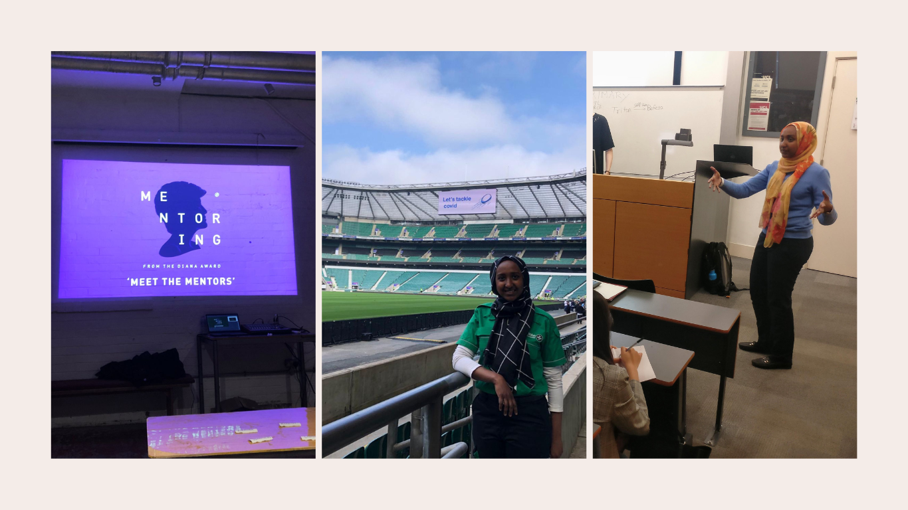

Hi, my name is Fahan. Find out more about me and what's brought me to web development
About Me
Introduction
I was born in Italy to Somali parents and grew up in the UK
My hobbies included playing Volleyball where I volunteered at the Training Venue for the London 2012 Olympic Games, near the FAC offices at the Sobell Leisure Centre in Finsbury Park
Study
I have a BSc in Business Management from King's College London and an MSc in Public Policy from UCL where I focused on behavioural economics
That's where my passion for the psychology of personal finance began which was the seed to my start-up idea that led me to FAC
Career
After graduation, I began a career in investment banking at Citigroup where I spent 7 years
Last October, I decided to make a change. After reflecting on what I wanted to do next, I chose to pursue entreprenuership and follow my passion for personal finance
My Community

The Diana Award
I am currently Trustee for The Diana Award, a charity I volunteered with for the past 10 years
St John Ambulance
Since 2015, I have been a First Aider for St John Ambulance, where I am able to sign-up to go on duties at public events in London at the weekend
SEO London
I am also an Alumni Mentor SEO London,a charity which trains students from disadvantaged backgrounds to enter careers in banking and law
Why Software Development?
3 motivations
Pursue Entrepreneurship
My business idea is to use Open Banking technology to offer better financial planning to individuals
I want to dedicate time to train as a software developer before building an MVP as I feel it will be important for me to understand the technical aspects
Meet Collaborators
Learning to code alongside others will introduce me to future collaborators and people in similar stages in their entrepreneurial journeys
This is also so I can grow my network within the technology industry
Growth Opportunity
One reason I had left my old job was to pursue growth
I want to take the time to learn for the sake of learning before diving into my next project
My Start-Up Idea
Got 3 minutes? Click the deck to listen to the pitch I prepared for a start-up competition last week.
FAC welcomes and brings together individuals from different career backgrounds
At the coding meetups, I met previous mentors who have made the switch into technology having studied different subjects at university or pursued a different career
Pair-Programming
The emphasis on peer-to-peer learning mirrors how people work together
I often used to discuss with my colleagues in abstract terms and later work in pairs to run analyses together in Excel
Dynamic Bootcamp
The Tech for Better projects peaked my interest
I feel that working on these will help me understand how to approach building an MVP for my business idea